稿子在 docs/design/2026-10-03-*（open-design 出的五块）。这份文件把每一块与
真跑出来的界面并排放。实装侧全部是离屏渲染的产物，不是示意图 ——
复现只要三条命令（见文末）。
以下截图都是 2026-10-04 这一轮之后的状态；这一轮修掉了 4 处不一致（标 已修）。
| 稿子 | 状态 | 差在哪 |
|---|---|---|
| 编辑器（工具条 / 状态行 / 文字预设） | 基本对齐 | 本轮换了两个图标（画笔、模糊）、补上了「识别文字」那一格；一处有记录的背离：编辑器里没有 Pro 小锁 |
| 升级卡片（三种文案 · 两个载体） | 已重做对齐 | 本轮按稿子重做：① 图标槽、⑤ 微行、按钮组右对齐（一个色块 + 一个文字按钮）、悬停/按下两态 |
| 偏好设置 4 页 | 本轮修 2 处 | Pro 状态区的主次与结构（原先两颗系统按钮反过来）、状态区面板没有铺满整列宽 |
| 最近截图面板 | 对齐 | 配额文案的数与稿子不同（产品定为 5 张，稿子示意 12） |
| 引导页 | 对齐 | — |
| 覆盖层（工具条 / 提示行 / 读数） | 要真机验收 | 它是逐屏全屏面板，离不开真实屏幕与屏幕录制授权，无法离屏截图；冒烟入口在（-marqueeSmokeOverlay） |
| 菜单栏下拉 | 要真机验收 | NSMenu 是系统临时面板，离屏拿不到；已按稿子实现（5 项 + 全菜单一把锁） |
| 小浮层（钉图 / 倒计时 / 权限） | 未出图 | 已接新色板（ticket 17a），本轮没有对照截图 |
上一轮出的 implemented-toolbar.png 里有两处一眼就不对：画笔用的是
pencil.tip（只画笔尖那一段，渲染出来是一个楔形），模糊用的是
camera.filters（两个交叠的圆，像"合并"）。稿子画的分别是一整支笔与水滴。
另外那一格「识别文字」在快照里根本没画出来 —— 因为它是 if let ocr 才画的，
而快照没传识别器。
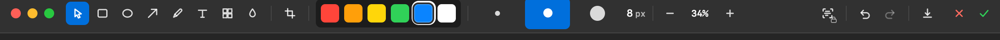
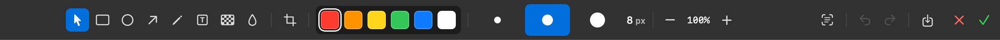
这是这一批改动最大的地方。原先是"标题 + 两行正文 + 两个等宽按钮"，而稿子给的是五个槽：
① 图标（用户刚点的那个功能）② 标题 ③ 正文（一行）④ 按钮组（一个色块 + 一个文字按钮，右对齐）
⑤ 微行（esc 键帽 + 关闭卡片，选区保留）。尺寸也从"140 一档"变成两档
（载体 A 140 / 载体 B 115 —— 差的正好是微行那一档）。
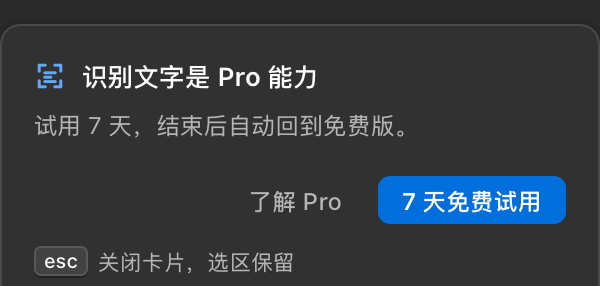
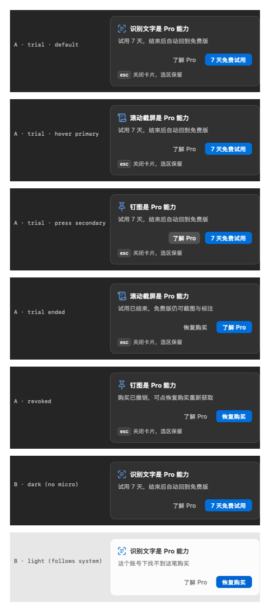
稿子里这一区是两行：状态句一行，下面一行按钮，其中「升级到 Pro」是整页唯一色块 （蓝实心、在左），「恢复购买」是纯文字（在右）。实装原来是两颗系统圆角按钮并排在状态句右边 —— 主次反了，而且没有色块。另外那一块面板当时没有铺满整列宽（缩到内容宽并贴到右边）。
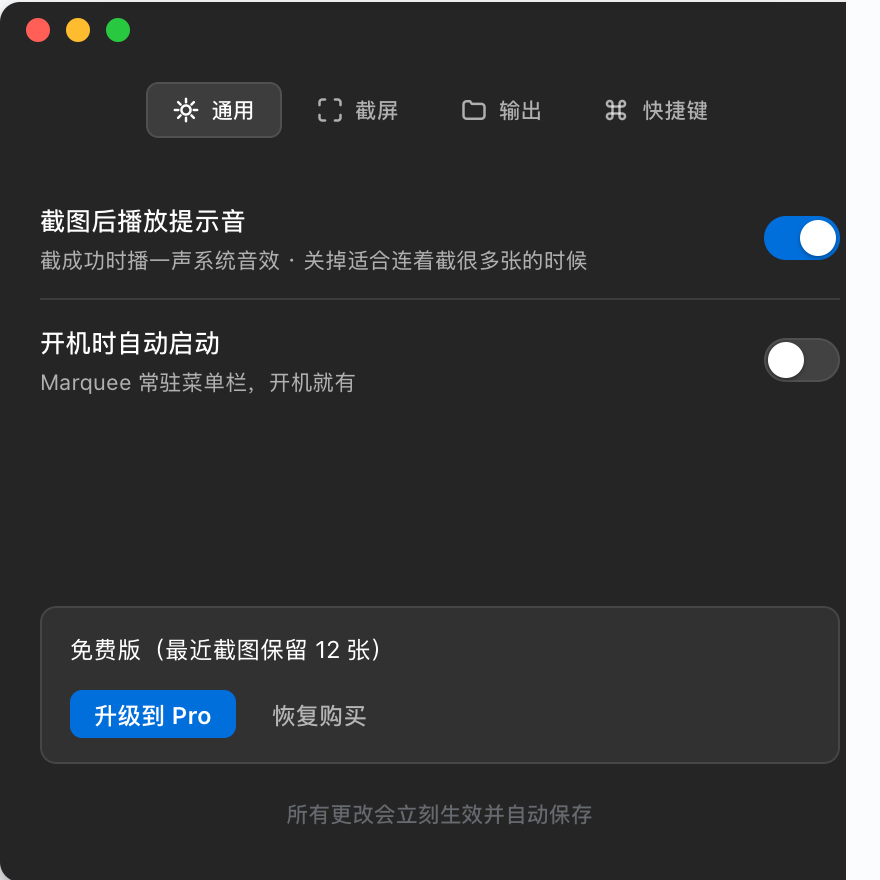
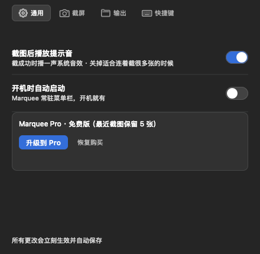
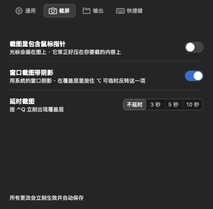
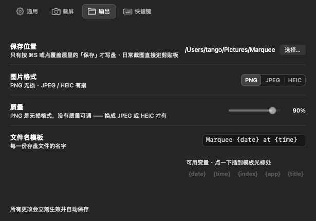
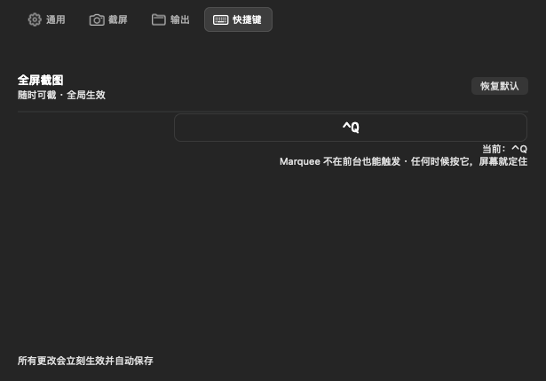
结构逐项对上：标题带 34 / 行 46（缩略图 48×34、时间 + 尺寸两行、右端两个动作）/ 底部 30 / 空态块 120；满 12 行 618。一处有意的不同：底部那句写的是「免费版只保留最近 5 张」， 而稿子的示意值是 12 —— 免费额度是产品决定（5 张），稿子那张图上的数只是示意。
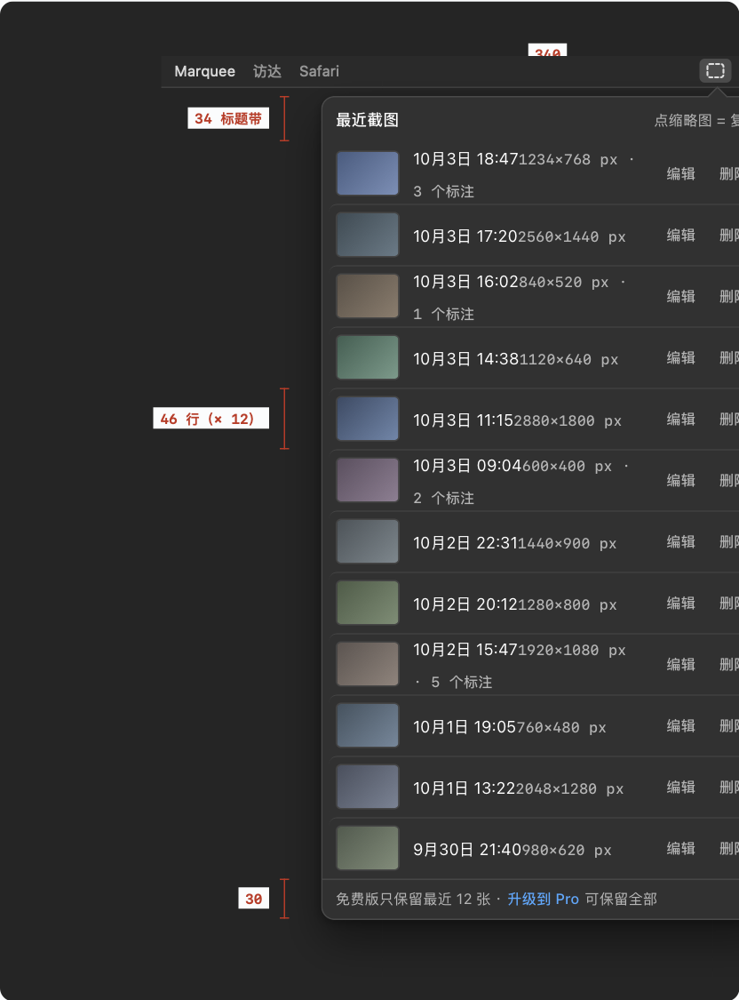
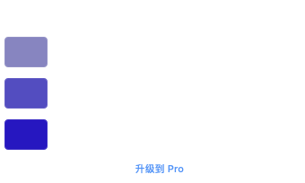
单页 440 × 336：标题 + 一句承诺 + 快捷键录制框 + 权限状态 + 两个动作。
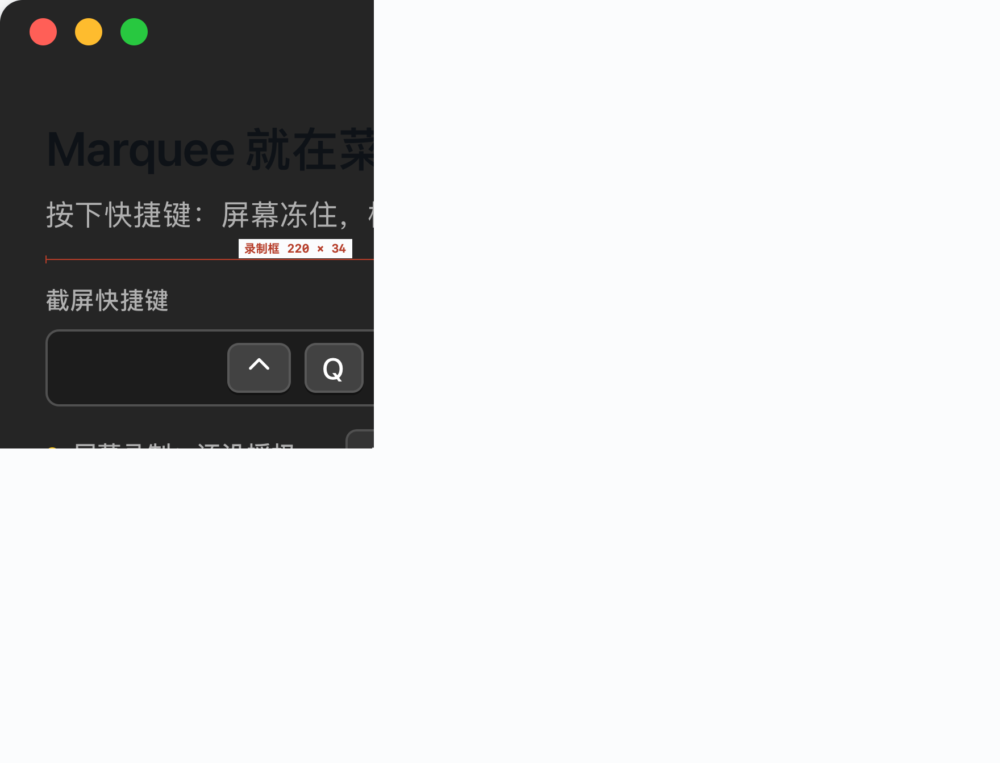
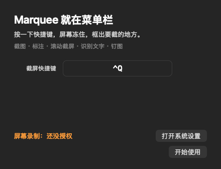
覆盖层是逐屏的全屏面板（.screenSaver 层 + 逐屏一个视图 + 冻结帧取色），
离开真实屏幕与屏幕录制授权就画不出来 —— 所以这一块没有离屏截图，只有稿子。
上一轮已经按稿子做过（15 格 / 545×40、白芯黑边、读数框三种行色、22 点提示行），
真机验收用 Marquee -marqueeSmokeOverlay。
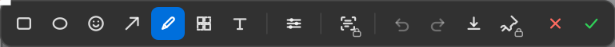
./scripts/build.sh（默认 Dev 配置）Marquee -marqueeSmokeCompliance → 偏好 4 页 + 最近截图 + 引导页Marquee -marqueeSmokeEditor → 编辑器工具条 / 状态行 / 文字预设Marquee -marqueeSmokeProCard → 升级卡片七种状态Marquee -marqueeSmokeRecent → 最近截图面板的量尺报告（文本）
图落在 ~/Library/Application Support/com.tango.marquee.dev/reports/。
稿子那一侧是用一个临时小工具（WKWebView 截图）从 HTML 里按选择器切出来的。
⚠️ 已知失真：材质（NSVisualEffectView）在离屏渲染时会退化成平色 ——
布局 / 字号 / 控件 / 颜色可信，"毛玻璃"看着比真机平。